Coding.
This is a project I worked on for learning javascript and DOM (yes I love learning stuff while "using" them).
It is for users to track their financial transactions and daily expenses. As an international students, I always
keep the habit of tracking my monthly expenses due to the high living cost in Vancouver. And that's the reason
for me to choose this senario for this project:))
And as always, I enjoy designing the layout of the webpage!
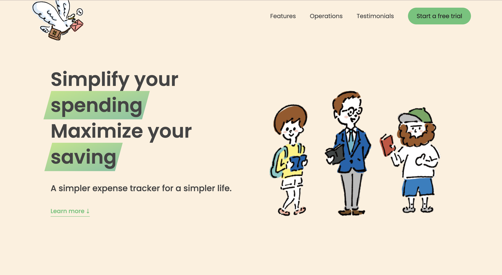
This is a database project I built with two other teammates in the class CPSC 304: Introduction to Relational
Database in UBC. We used the Oracle server provided byu the department with PHP.
We have some default data in the database and you can play around with it here.
Feel free to visit the Github repo if you are interested in the ER diagram, schema, and normalization process.
This is a digital archive project I built during my summer abroad at UC Berkeley. It's an online tiny kitchenware
archive including an online exhibit based on the web framework Django to displace over 8 objects with their
metadata and 3D models.
In the exhibit, we include 4 different chopsticks which seem functionally indistinguishable.
We demonstrated the history and cultural differences behind them.
Here are some of the webpages and 3D models our group included in this digital archive.
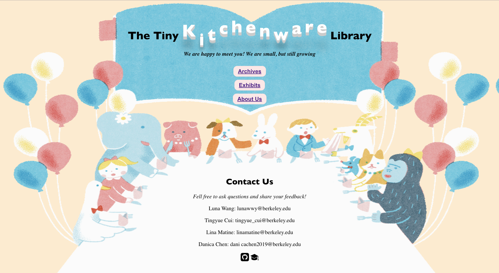
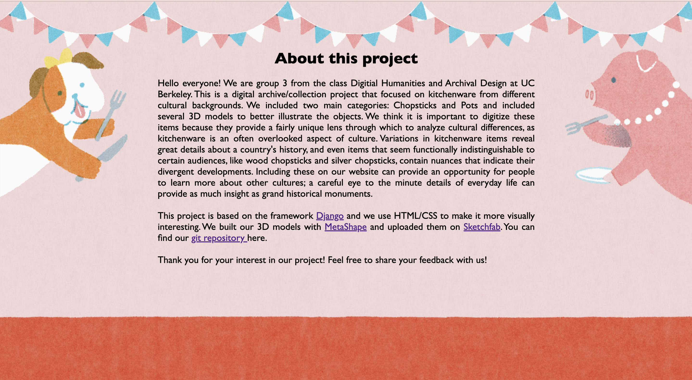
If you are interested in this archive, feel free to run this project on your localserver!
Fun Fact: The other 3 people in my group are all from non-STEM majors and have no coding experience before, but
I think we had great teamwork! One girl who is an English major helped us do all the research, writing, and
history staff in the exhibit. That's helped a lot cause I am really bad at writing... Really enjoyed working with them!
This is a Java desktop application to help users decide what to eat today, allowing the user to perform 6
different functions such as adding lists, deleting lists, choosing categories, and random choosing. Users are
also able to save their data with the JSON library, helping users keep track of the restaurant list they construct.
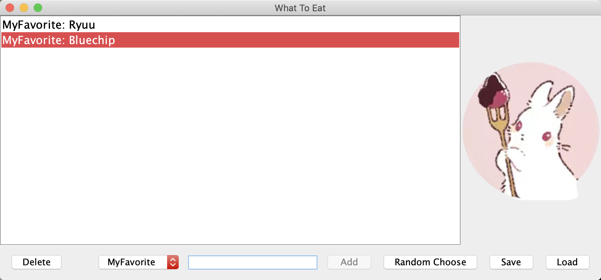
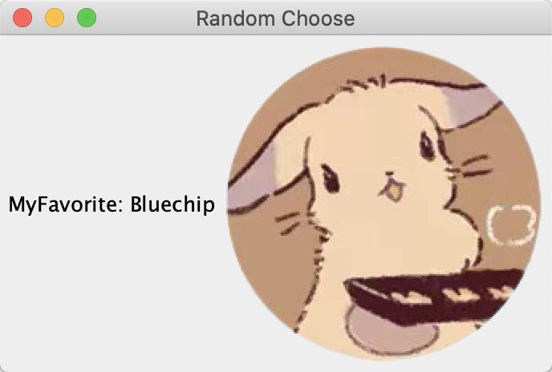
This is actually my very first cs project that I developed for the class CPSC 210 at UBC. I know it looks a little bit
ugly, but I'm still proud of it XD
This is a project from the 48-hour Hackathon Rookie Hacks 2 held by Major League Hacking.
This website will select 6 worldwide commerce-related news each day. You can see the title, a descriptive image, and a brief
introduction for each one. If you are getting interested in a particular piece of news, clicking the URL provided
at the end of each news will direct you to the original news source.
You can visit our website here!
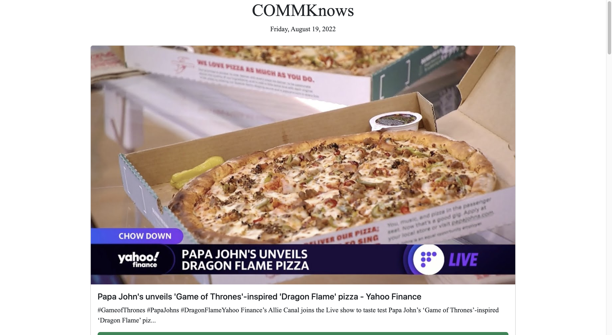
I worked on this project with one of my friends Shawn who is from McMaster University. He is a great developer
and always helped me out with coding issues. Go check out his
LinkedIn and GitHub!
Bullet Journal.
In my free time, I like writing bullet journals/planners. I called them Techo, a word from the Japanese word 手帳.
I also like to decorate them with washi(和紙) tape and write some reflections for the day.

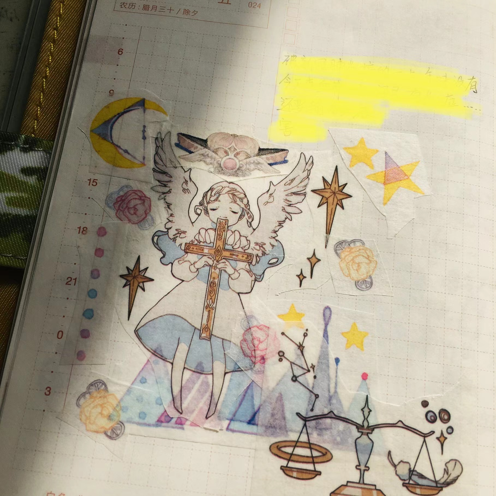
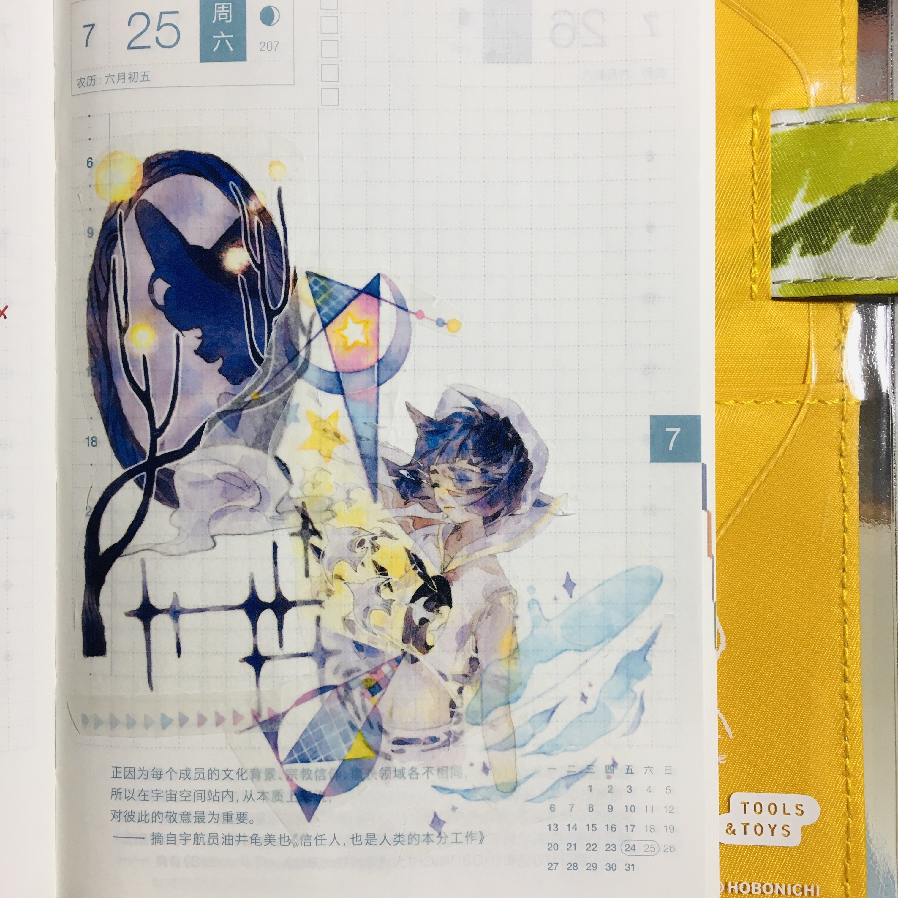

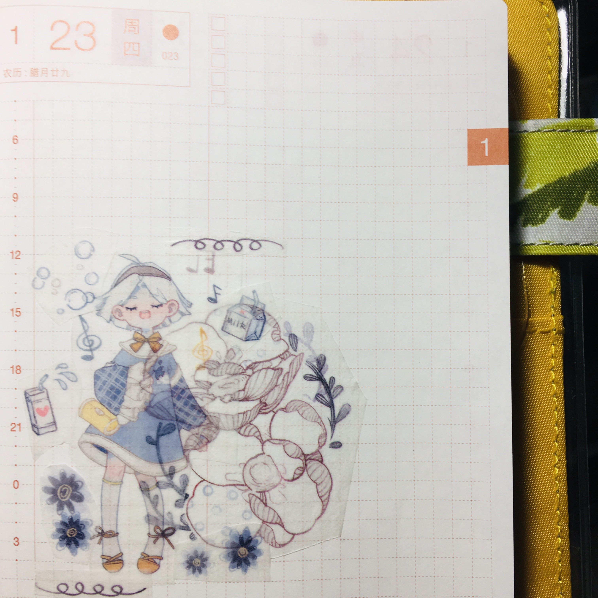
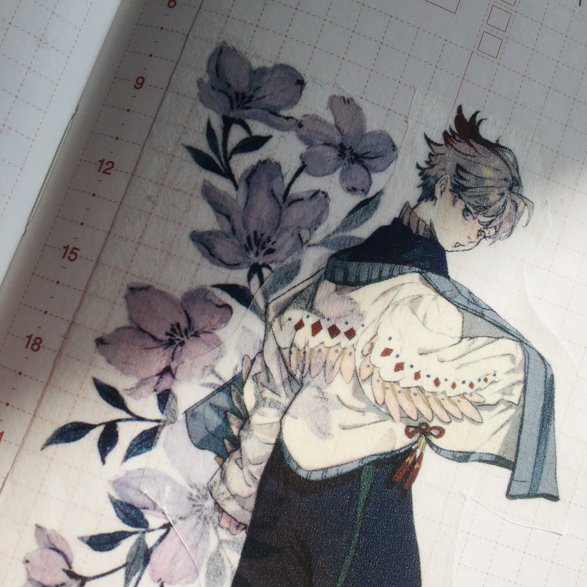
Here are some of my journal collection, and the planner I am currently used for 2023.
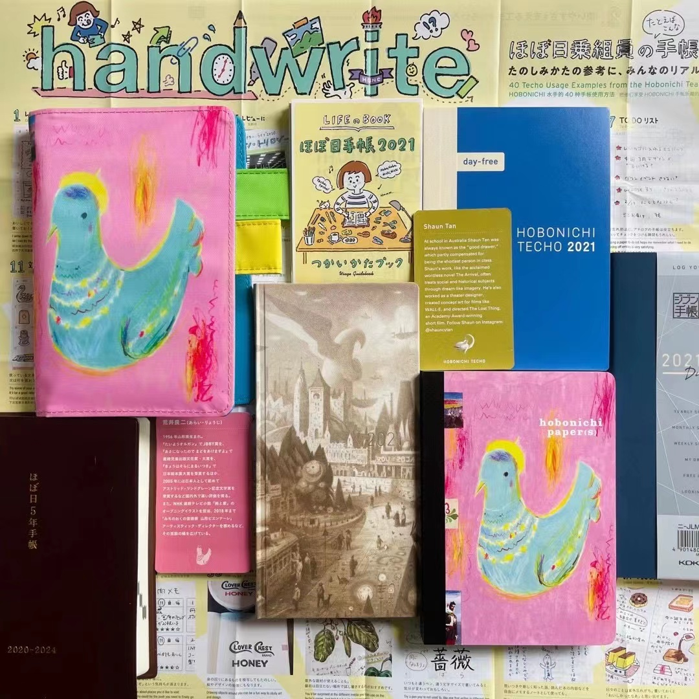
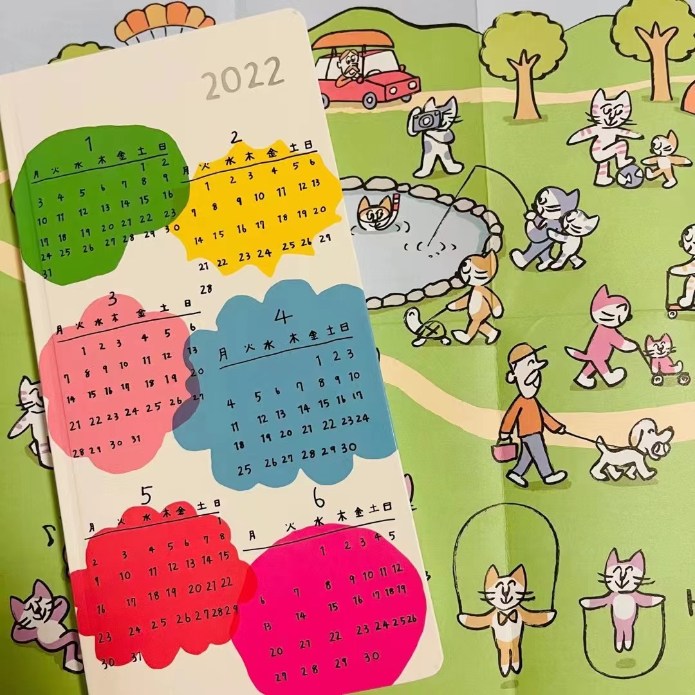
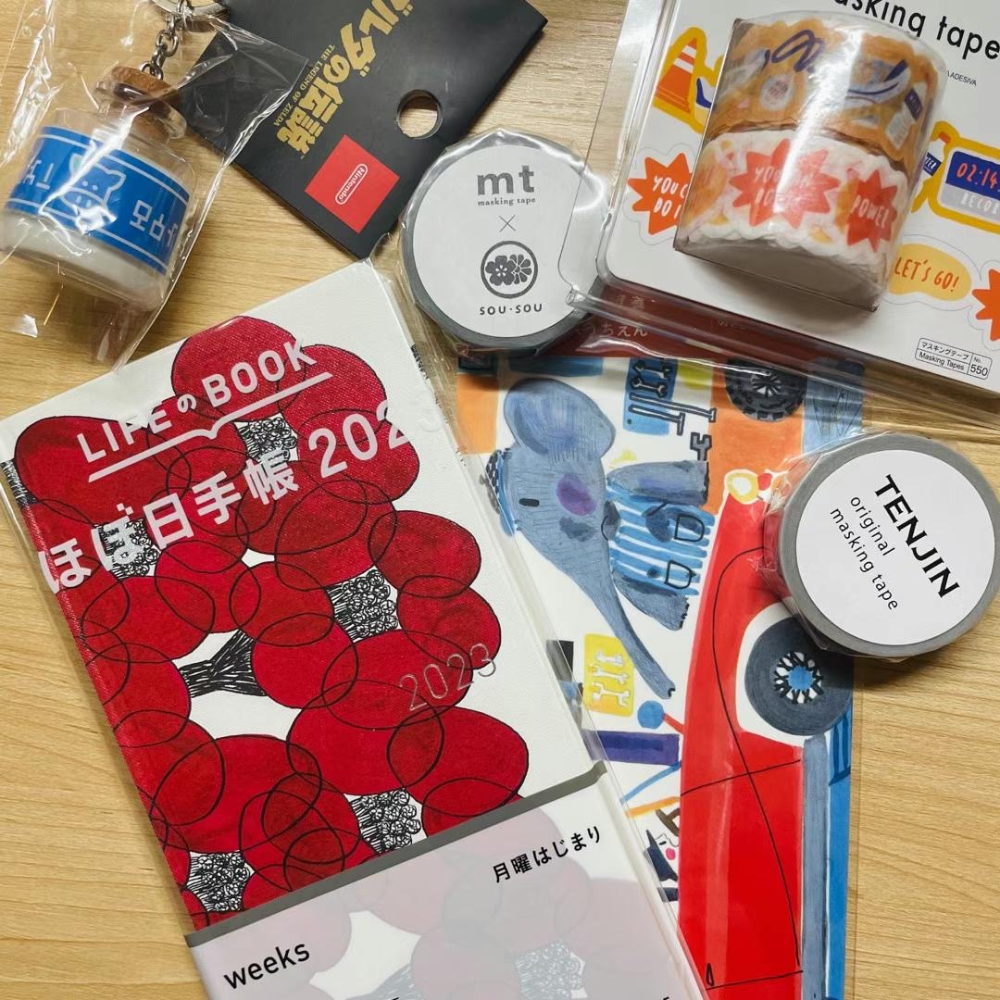
I am also working on a 5-year Techo. Each daily page of this techo lines up the same date across five years for
users to write each entry side by side. I started writing it in 2020, which is the year I finished high school
and entered university. I hope this techo will help me to record my entire journey in university.